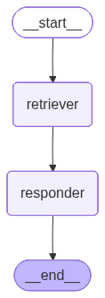

Agentic RAG#
🤖 What is Agentic RAG?
Agentic RAG stands for Agentic Retrieval-Augmented Generation — an advanced version of RAG where instead of a static, one-shot LLM response,the system uses an agent that:
reasons,
plans,
retrieves,
uses tools,
and even retries or reflects to generate better, more grounded answers.
import os
from typing import List, Annotated
from pydantic import BaseModel
from langchain_community.vectorstores import FAISS
from langchain_community.document_loaders import WebBaseLoader
from langchain_text_splitters import RecursiveCharacterTextSplitter
from langchain.chat_models import init_chat_model
from langchain_openai import OpenAIEmbeddings
from langchain_core.documents import Document
from langgraph.graph import StateGraph, END
import os
from dotenv import load_dotenv
load_dotenv()
os.environ["OPENAI_API_KEY"]=os.getenv("OPENAI_API_KEY")
llm=init_chat_model("openai:gpt-4o")
llm
ChatOpenAI(client=<openai.resources.chat.completions.completions.Completions object at 0x000001E4C5787CE0>, async_client=<openai.resources.chat.completions.completions.AsyncCompletions object at 0x000001E4C70924E0>, root_client=<openai.OpenAI object at 0x000001E4C56563C0>, root_async_client=<openai.AsyncOpenAI object at 0x000001E4C5784740>, model_name='gpt-4o', model_kwargs={}, openai_api_key=SecretStr('**********'), stream_usage=True)
# -----------------------------
# 1. Document Preprocessing
# -----------------------------
urls = [
"https://lilianweng.github.io/posts/2023-06-23-agent/",
"https://lilianweng.github.io/posts/2024-04-12-diffusion-video/"
]
loaders = [WebBaseLoader(url) for url in urls]
docs = []
for loader in loaders:
docs.extend(loader.load())
docs
[Document(metadata={'source': 'https://lilianweng.github.io/posts/2023-06-23-agent/', 'title': "LLM Powered Autonomous Agents | Lil'Log", 'description': 'Building agents with LLM (large language model) as its core controller is a cool concept. Several proof-of-concepts demos, such as AutoGPT, GPT-Engineer and BabyAGI, serve as inspiring examples. The potentiality of LLM extends beyond generating well-written copies, stories, essays and programs; it can be framed as a powerful general problem solver.\nAgent System Overview\nIn a LLM-powered autonomous agent system, LLM functions as the agent’s brain, complemented by several key components:\n\nPlanning\n\nSubgoal and decomposition: The agent breaks down large tasks into smaller, manageable subgoals, enabling efficient handling of complex tasks.\nReflection and refinement: The agent can do self-criticism and self-reflection over past actions, learn from mistakes and refine them for future steps, thereby improving the quality of final results.\n\n\nMemory\n\nShort-term memory: I would consider all the in-context learning (See Prompt Engineering) as utilizing short-term memory of the model to learn.\nLong-term memory: This provides the agent with the capability to retain and recall (infinite) information over extended periods, often by leveraging an external vector store and fast retrieval.\n\n\nTool use\n\nThe agent learns to call external APIs for extra information that is missing from the model weights (often hard to change after pre-training), including current information, code execution capability, access to proprietary information sources and more.\n\n\n\n\n\t\n\tOverview of a LLM-powered autonomous agent system.\n\nComponent One: Planning\nA complicated task usually involves many steps. An agent needs to know what they are and plan ahead.', 'language': 'en'}, page_content='\n\n\n\n\n\nLLM Powered Autonomous Agents | Lil\'Log\n\n\n\n\n\n\n\n\n\n\n\n\n\n\n\n\n\n\n\n\n\n\n\n\n\n\n\n\n\n\n\n\n\n\n\n\n\n\n\nLil\'Log\n\n\n\n\n\n\n\n\n\n\n\n\n\n\n\n\n\n|\n\n\n\n\n\n\nPosts\n\n\n\n\nArchive\n\n\n\n\nSearch\n\n\n\n\nTags\n\n\n\n\nFAQ\n\n\n\n\n\n\n\n\n\n LLM Powered Autonomous Agents\n \nDate: June 23, 2023 | Estimated Reading Time: 31 min | Author: Lilian Weng\n\n\n \n\n\nTable of Contents\n\n\n\nAgent System Overview\n\nComponent One: Planning\n\nTask Decomposition\n\nSelf-Reflection\n\n\nComponent Two: Memory\n\nTypes of Memory\n\nMaximum Inner Product Search (MIPS)\n\n\nComponent Three: Tool Use\n\nCase Studies\n\nScientific Discovery Agent\n\nGenerative Agents Simulation\n\nProof-of-Concept Examples\n\n\nChallenges\n\nCitation\n\nReferences\n\n\n\n\n\nBuilding agents with LLM (large language model) as its core controller is a cool concept. Several proof-of-concepts demos, such as AutoGPT, GPT-Engineer and BabyAGI, serve as inspiring examples. The potentiality of LLM extends beyond generating well-written copies, stories, essays and programs; it can be framed as a powerful general problem solver.\nAgent System Overview#\nIn a LLM-powered autonomous agent system, LLM functions as the agent’s brain, complemented by several key components:\n\nPlanning\n\nSubgoal and decomposition: The agent breaks down large tasks into smaller, manageable subgoals, enabling efficient handling of complex tasks.\nReflection and refinement: The agent can do self-criticism and self-reflection over past actions, learn from mistakes and refine them for future steps, thereby improving the quality of final results.\n\n\nMemory\n\nShort-term memory: I would consider all the in-context learning (See Prompt Engineering) as utilizing short-term memory of the model to learn.\nLong-term memory: This provides the agent with the capability to retain and recall (infinite) information over extended periods, often by leveraging an external vector store and fast retrieval.\n\n\nTool use\n\nThe agent learns to call external APIs for extra information that is missing from the model weights (often hard to change after pre-training), including current information, code execution capability, access to proprietary information sources and more.\n\n\n\n\n\nOverview of a LLM-powered autonomous agent system.\n\nComponent One: Planning#\nA complicated task usually involves many steps. An agent needs to know what they are and plan ahead.\nTask Decomposition#\nChain of thought (CoT; Wei et al. 2022) has become a standard prompting technique for enhancing model performance on complex tasks. The model is instructed to “think step by step” to utilize more test-time computation to decompose hard tasks into smaller and simpler steps. CoT transforms big tasks into multiple manageable tasks and shed lights into an interpretation of the model’s thinking process.\nTree of Thoughts (Yao et al. 2023) extends CoT by exploring multiple reasoning possibilities at each step. It first decomposes the problem into multiple thought steps and generates multiple thoughts per step, creating a tree structure. The search process can be BFS (breadth-first search) or DFS (depth-first search) with each state evaluated by a classifier (via a prompt) or majority vote.\nTask decomposition can be done (1) by LLM with simple prompting like "Steps for XYZ.\\n1.", "What are the subgoals for achieving XYZ?", (2) by using task-specific instructions; e.g. "Write a story outline." for writing a novel, or (3) with human inputs.\nAnother quite distinct approach, LLM+P (Liu et al. 2023), involves relying on an external classical planner to do long-horizon planning. This approach utilizes the Planning Domain Definition Language (PDDL) as an intermediate interface to describe the planning problem. In this process, LLM (1) translates the problem into “Problem PDDL”, then (2) requests a classical planner to generate a PDDL plan based on an existing “Domain PDDL”, and finally (3) translates the PDDL plan back into natural language. Essentially, the planning step is outsourced to an external tool, assuming the availability of domain-specific PDDL and a suitable planner which is common in certain robotic setups but not in many other domains.\nSelf-Reflection#\nSelf-reflection is a vital aspect that allows autonomous agents to improve iteratively by refining past action decisions and correcting previous mistakes. It plays a crucial role in real-world tasks where trial and error are inevitable.\nReAct (Yao et al. 2023) integrates reasoning and acting within LLM by extending the action space to be a combination of task-specific discrete actions and the language space. The former enables LLM to interact with the environment (e.g. use Wikipedia search API), while the latter prompting LLM to generate reasoning traces in natural language.\nThe ReAct prompt template incorporates explicit steps for LLM to think, roughly formatted as:\nThought: ...\nAction: ...\nObservation: ...\n... (Repeated many times)\n\n\nExamples of reasoning trajectories for knowledge-intensive tasks (e.g. HotpotQA, FEVER) and decision-making tasks (e.g. AlfWorld Env, WebShop). (Image source: Yao et al. 2023).\n\nIn both experiments on knowledge-intensive tasks and decision-making tasks, ReAct works better than the Act-only baseline where Thought: … step is removed.\nReflexion (Shinn & Labash 2023) is a framework to equip agents with dynamic memory and self-reflection capabilities to improve reasoning skills. Reflexion has a standard RL setup, in which the reward model provides a simple binary reward and the action space follows the setup in ReAct where the task-specific action space is augmented with language to enable complex reasoning steps. After each action $a_t$, the agent computes a heuristic $h_t$ and optionally may decide to reset the environment to start a new trial depending on the self-reflection results.\n\n\nIllustration of the Reflexion framework. (Image source: Shinn & Labash, 2023)\n\nThe heuristic function determines when the trajectory is inefficient or contains hallucination and should be stopped. Inefficient planning refers to trajectories that take too long without success. Hallucination is defined as encountering a sequence of consecutive identical actions that lead to the same observation in the environment.\nSelf-reflection is created by showing two-shot examples to LLM and each example is a pair of (failed trajectory, ideal reflection for guiding future changes in the plan). Then reflections are added into the agent’s working memory, up to three, to be used as context for querying LLM.\n\n\nExperiments on AlfWorld Env and HotpotQA. Hallucination is a more common failure than inefficient planning in AlfWorld. (Image source: Shinn & Labash, 2023)\n\nChain of Hindsight (CoH; Liu et al. 2023) encourages the model to improve on its own outputs by explicitly presenting it with a sequence of past outputs, each annotated with feedback. Human feedback data is a collection of $D_h = \\{(x, y_i , r_i , z_i)\\}_{i=1}^n$, where $x$ is the prompt, each $y_i$ is a model completion, $r_i$ is the human rating of $y_i$, and $z_i$ is the corresponding human-provided hindsight feedback. Assume the feedback tuples are ranked by reward, $r_n \\geq r_{n-1} \\geq \\dots \\geq r_1$ The process is supervised fine-tuning where the data is a sequence in the form of $\\tau_h = (x, z_i, y_i, z_j, y_j, \\dots, z_n, y_n)$, where $\\leq i \\leq j \\leq n$. The model is finetuned to only predict $y_n$ where conditioned on the sequence prefix, such that the model can self-reflect to produce better output based on the feedback sequence. The model can optionally receive multiple rounds of instructions with human annotators at test time.\nTo avoid overfitting, CoH adds a regularization term to maximize the log-likelihood of the pre-training dataset. To avoid shortcutting and copying (because there are many common words in feedback sequences), they randomly mask 0% - 5% of past tokens during training.\nThe training dataset in their experiments is a combination of WebGPT comparisons, summarization from human feedback and human preference dataset.\n\n\nAfter fine-tuning with CoH, the model can follow instructions to produce outputs with incremental improvement in a sequence. (Image source: Liu et al. 2023)\n\nThe idea of CoH is to present a history of sequentially improved outputs in context and train the model to take on the trend to produce better outputs. Algorithm Distillation (AD; Laskin et al. 2023) applies the same idea to cross-episode trajectories in reinforcement learning tasks, where an algorithm is encapsulated in a long history-conditioned policy. Considering that an agent interacts with the environment many times and in each episode the agent gets a little better, AD concatenates this learning history and feeds that into the model. Hence we should expect the next predicted action to lead to better performance than previous trials. The goal is to learn the process of RL instead of training a task-specific policy itself.\n\n\nIllustration of how Algorithm Distillation (AD) works. (Image source: Laskin et al. 2023).\n\nThe paper hypothesizes that any algorithm that generates a set of learning histories can be distilled into a neural network by performing behavioral cloning over actions. The history data is generated by a set of source policies, each trained for a specific task. At the training stage, during each RL run, a random task is sampled and a subsequence of multi-episode history is used for training, such that the learned policy is task-agnostic.\nIn reality, the model has limited context window length, so episodes should be short enough to construct multi-episode history. Multi-episodic contexts of 2-4 episodes are necessary to learn a near-optimal in-context RL algorithm. The emergence of in-context RL requires long enough context.\nIn comparison with three baselines, including ED (expert distillation, behavior cloning with expert trajectories instead of learning history), source policy (used for generating trajectories for distillation by UCB), RL^2 (Duan et al. 2017; used as upper bound since it needs online RL), AD demonstrates in-context RL with performance getting close to RL^2 despite only using offline RL and learns much faster than other baselines. When conditioned on partial training history of the source policy, AD also improves much faster than ED baseline.\n\n\nComparison of AD, ED, source policy and RL^2 on environments that require memory and exploration. Only binary reward is assigned. The source policies are trained with A3C for "dark" environments and DQN for watermaze.(Image source: Laskin et al. 2023)\n\nComponent Two: Memory#\n(Big thank you to ChatGPT for helping me draft this section. I’ve learned a lot about the human brain and data structure for fast MIPS in my conversations with ChatGPT.)\nTypes of Memory#\nMemory can be defined as the processes used to acquire, store, retain, and later retrieve information. There are several types of memory in human brains.\n\n\nSensory Memory: This is the earliest stage of memory, providing the ability to retain impressions of sensory information (visual, auditory, etc) after the original stimuli have ended. Sensory memory typically only lasts for up to a few seconds. Subcategories include iconic memory (visual), echoic memory (auditory), and haptic memory (touch).\n\n\nShort-Term Memory (STM) or Working Memory: It stores information that we are currently aware of and needed to carry out complex cognitive tasks such as learning and reasoning. Short-term memory is believed to have the capacity of about 7 items (Miller 1956) and lasts for 20-30 seconds.\n\n\nLong-Term Memory (LTM): Long-term memory can store information for a remarkably long time, ranging from a few days to decades, with an essentially unlimited storage capacity. There are two subtypes of LTM:\n\nExplicit / declarative memory: This is memory of facts and events, and refers to those memories that can be consciously recalled, including episodic memory (events and experiences) and semantic memory (facts and concepts).\nImplicit / procedural memory: This type of memory is unconscious and involves skills and routines that are performed automatically, like riding a bike or typing on a keyboard.\n\n\n\n\n\nCategorization of human memory.\n\nWe can roughly consider the following mappings:\n\nSensory memory as learning embedding representations for raw inputs, including text, image or other modalities;\nShort-term memory as in-context learning. It is short and finite, as it is restricted by the finite context window length of Transformer.\nLong-term memory as the external vector store that the agent can attend to at query time, accessible via fast retrieval.\n\nMaximum Inner Product Search (MIPS)#\nThe external memory can alleviate the restriction of finite attention span. A standard practice is to save the embedding representation of information into a vector store database that can support fast maximum inner-product search (MIPS). To optimize the retrieval speed, the common choice is the approximate nearest neighbors (ANN)\u200b algorithm to return approximately top k nearest neighbors to trade off a little accuracy lost for a huge speedup.\nA couple common choices of ANN algorithms for fast MIPS:\n\nLSH (Locality-Sensitive Hashing): It introduces a hashing function such that similar input items are mapped to the same buckets with high probability, where the number of buckets is much smaller than the number of inputs.\nANNOY (Approximate Nearest Neighbors Oh Yeah): The core data structure are random projection trees, a set of binary trees where each non-leaf node represents a hyperplane splitting the input space into half and each leaf stores one data point. Trees are built independently and at random, so to some extent, it mimics a hashing function. ANNOY search happens in all the trees to iteratively search through the half that is closest to the query and then aggregates the results. The idea is quite related to KD tree but a lot more scalable.\nHNSW (Hierarchical Navigable Small World): It is inspired by the idea of small world networks where most nodes can be reached by any other nodes within a small number of steps; e.g. “six degrees of separation” feature of social networks. HNSW builds hierarchical layers of these small-world graphs, where the bottom layers contain the actual data points. The layers in the middle create shortcuts to speed up search. When performing a search, HNSW starts from a random node in the top layer and navigates towards the target. When it can’t get any closer, it moves down to the next layer, until it reaches the bottom layer. Each move in the upper layers can potentially cover a large distance in the data space, and each move in the lower layers refines the search quality.\nFAISS (Facebook AI Similarity Search): It operates on the assumption that in high dimensional space, distances between nodes follow a Gaussian distribution and thus there should exist clustering of data points. FAISS applies vector quantization by partitioning the vector space into clusters and then refining the quantization within clusters. Search first looks for cluster candidates with coarse quantization and then further looks into each cluster with finer quantization.\nScaNN (Scalable Nearest Neighbors): The main innovation in ScaNN is anisotropic vector quantization. It quantizes a data point $x_i$ to $\\tilde{x}_i$ such that the inner product $\\langle q, x_i \\rangle$ is as similar to the original distance of $\\angle q, \\tilde{x}_i$ as possible, instead of picking the closet quantization centroid points.\n\n\n\nComparison of MIPS algorithms, measured in recall@10. (Image source: Google Blog, 2020)\n\nCheck more MIPS algorithms and performance comparison in ann-benchmarks.com.\nComponent Three: Tool Use#\nTool use is a remarkable and distinguishing characteristic of human beings. We create, modify and utilize external objects to do things that go beyond our physical and cognitive limits. Equipping LLMs with external tools can significantly extend the model capabilities.\n\n\nA picture of a sea otter using rock to crack open a seashell, while floating in the water. While some other animals can use tools, the complexity is not comparable with humans. (Image source: Animals using tools)\n\nMRKL (Karpas et al. 2022), short for “Modular Reasoning, Knowledge and Language”, is a neuro-symbolic architecture for autonomous agents. A MRKL system is proposed to contain a collection of “expert” modules and the general-purpose LLM works as a router to route inquiries to the best suitable expert module. These modules can be neural (e.g. deep learning models) or symbolic (e.g. math calculator, currency converter, weather API).\nThey did an experiment on fine-tuning LLM to call a calculator, using arithmetic as a test case. Their experiments showed that it was harder to solve verbal math problems than explicitly stated math problems because LLMs (7B Jurassic1-large model) failed to extract the right arguments for the basic arithmetic reliably. The results highlight when the external symbolic tools can work reliably, knowing when to and how to use the tools are crucial, determined by the LLM capability.\nBoth TALM (Tool Augmented Language Models; Parisi et al. 2022) and Toolformer (Schick et al. 2023) fine-tune a LM to learn to use external tool APIs. The dataset is expanded based on whether a newly added API call annotation can improve the quality of model outputs. See more details in the “External APIs” section of Prompt Engineering.\nChatGPT Plugins and OpenAI API function calling are good examples of LLMs augmented with tool use capability working in practice. The collection of tool APIs can be provided by other developers (as in Plugins) or self-defined (as in function calls).\nHuggingGPT (Shen et al. 2023) is a framework to use ChatGPT as the task planner to select models available in HuggingFace platform according to the model descriptions and summarize the response based on the execution results.\n\n\nIllustration of how HuggingGPT works. (Image source: Shen et al. 2023)\n\nThe system comprises of 4 stages:\n(1) Task planning: LLM works as the brain and parses the user requests into multiple tasks. There are four attributes associated with each task: task type, ID, dependencies, and arguments. They use few-shot examples to guide LLM to do task parsing and planning.\nInstruction:\n\nThe AI assistant can parse user input to several tasks: [{"task": task, "id", task_id, "dep": dependency_task_ids, "args": {"text": text, "image": URL, "audio": URL, "video": URL}}]. The "dep" field denotes the id of the previous task which generates a new resource that the current task relies on. A special tag "-task_id" refers to the generated text image, audio and video in the dependency task with id as task_id. The task MUST be selected from the following options: {{ Available Task List }}. There is a logical relationship between tasks, please note their order. If the user input can\'t be parsed, you need to reply empty JSON. Here are several cases for your reference: {{ Demonstrations }}. The chat history is recorded as {{ Chat History }}. From this chat history, you can find the path of the user-mentioned resources for your task planning.\n\n(2) Model selection: LLM distributes the tasks to expert models, where the request is framed as a multiple-choice question. LLM is presented with a list of models to choose from. Due to the limited context length, task type based filtration is needed.\nInstruction:\n\nGiven the user request and the call command, the AI assistant helps the user to select a suitable model from a list of models to process the user request. The AI assistant merely outputs the model id of the most appropriate model. The output must be in a strict JSON format: "id": "id", "reason": "your detail reason for the choice". We have a list of models for you to choose from {{ Candidate Models }}. Please select one model from the list.\n\n(3) Task execution: Expert models execute on the specific tasks and log results.\nInstruction:\n\nWith the input and the inference results, the AI assistant needs to describe the process and results. The previous stages can be formed as - User Input: {{ User Input }}, Task Planning: {{ Tasks }}, Model Selection: {{ Model Assignment }}, Task Execution: {{ Predictions }}. You must first answer the user\'s request in a straightforward manner. Then describe the task process and show your analysis and model inference results to the user in the first person. If inference results contain a file path, must tell the user the complete file path.\n\n(4) Response generation: LLM receives the execution results and provides summarized results to users.\nTo put HuggingGPT into real world usage, a couple challenges need to solve: (1) Efficiency improvement is needed as both LLM inference rounds and interactions with other models slow down the process; (2) It relies on a long context window to communicate over complicated task content; (3) Stability improvement of LLM outputs and external model services.\nAPI-Bank (Li et al. 2023) is a benchmark for evaluating the performance of tool-augmented LLMs. It contains 53 commonly used API tools, a complete tool-augmented LLM workflow, and 264 annotated dialogues that involve 568 API calls. The selection of APIs is quite diverse, including search engines, calculator, calendar queries, smart home control, schedule management, health data management, account authentication workflow and more. Because there are a large number of APIs, LLM first has access to API search engine to find the right API to call and then uses the corresponding documentation to make a call.\n\n\nPseudo code of how LLM makes an API call in API-Bank. (Image source: Li et al. 2023)\n\nIn the API-Bank workflow, LLMs need to make a couple of decisions and at each step we can evaluate how accurate that decision is. Decisions include:\n\nWhether an API call is needed.\nIdentify the right API to call: if not good enough, LLMs need to iteratively modify the API inputs (e.g. deciding search keywords for Search Engine API).\nResponse based on the API results: the model can choose to refine and call again if results are not satisfied.\n\nThis benchmark evaluates the agent’s tool use capabilities at three levels:\n\nLevel-1 evaluates the ability to call the API. Given an API’s description, the model needs to determine whether to call a given API, call it correctly, and respond properly to API returns.\nLevel-2 examines the ability to retrieve the API. The model needs to search for possible APIs that may solve the user’s requirement and learn how to use them by reading documentation.\nLevel-3 assesses the ability to plan API beyond retrieve and call. Given unclear user requests (e.g. schedule group meetings, book flight/hotel/restaurant for a trip), the model may have to conduct multiple API calls to solve it.\n\nCase Studies#\nScientific Discovery Agent#\nChemCrow (Bran et al. 2023) is a domain-specific example in which LLM is augmented with 13 expert-designed tools to accomplish tasks across organic synthesis, drug discovery, and materials design. The workflow, implemented in LangChain, reflects what was previously described in the ReAct and MRKLs and combines CoT reasoning with tools relevant to the tasks:\n\nThe LLM is provided with a list of tool names, descriptions of their utility, and details about the expected input/output.\nIt is then instructed to answer a user-given prompt using the tools provided when necessary. The instruction suggests the model to follow the ReAct format - Thought, Action, Action Input, Observation.\n\nOne interesting observation is that while the LLM-based evaluation concluded that GPT-4 and ChemCrow perform nearly equivalently, human evaluations with experts oriented towards the completion and chemical correctness of the solutions showed that ChemCrow outperforms GPT-4 by a large margin. This indicates a potential problem with using LLM to evaluate its own performance on domains that requires deep expertise. The lack of expertise may cause LLMs not knowing its flaws and thus cannot well judge the correctness of task results.\nBoiko et al. (2023) also looked into LLM-empowered agents for scientific discovery, to handle autonomous design, planning, and performance of complex scientific experiments. This agent can use tools to browse the Internet, read documentation, execute code, call robotics experimentation APIs and leverage other LLMs.\nFor example, when requested to "develop a novel anticancer drug", the model came up with the following reasoning steps:\n\ninquired about current trends in anticancer drug discovery;\nselected a target;\nrequested a scaffold targeting these compounds;\nOnce the compound was identified, the model attempted its synthesis.\n\nThey also discussed the risks, especially with illicit drugs and bioweapons. They developed a test set containing a list of known chemical weapon agents and asked the agent to synthesize them. 4 out of 11 requests (36%) were accepted to obtain a synthesis solution and the agent attempted to consult documentation to execute the procedure. 7 out of 11 were rejected and among these 7 rejected cases, 5 happened after a Web search while 2 were rejected based on prompt only.\nGenerative Agents Simulation#\nGenerative Agents (Park, et al. 2023) is super fun experiment where 25 virtual characters, each controlled by a LLM-powered agent, are living and interacting in a sandbox environment, inspired by The Sims. Generative agents create believable simulacra of human behavior for interactive applications.\nThe design of generative agents combines LLM with memory, planning and reflection mechanisms to enable agents to behave conditioned on past experience, as well as to interact with other agents.\n\nMemory stream: is a long-term memory module (external database) that records a comprehensive list of agents’ experience in natural language.\n\nEach element is an observation, an event directly provided by the agent.\n- Inter-agent communication can trigger new natural language statements.\n\n\nRetrieval model: surfaces the context to inform the agent’s behavior, according to relevance, recency and importance.\n\nRecency: recent events have higher scores\nImportance: distinguish mundane from core memories. Ask LM directly.\nRelevance: based on how related it is to the current situation / query.\n\n\nReflection mechanism: synthesizes memories into higher level inferences over time and guides the agent’s future behavior. They are higher-level summaries of past events (<- note that this is a bit different from self-reflection above)\n\nPrompt LM with 100 most recent observations and to generate 3 most salient high-level questions given a set of observations/statements. Then ask LM to answer those questions.\n\n\nPlanning & Reacting: translate the reflections and the environment information into actions\n\nPlanning is essentially in order to optimize believability at the moment vs in time.\nPrompt template: {Intro of an agent X}. Here is X\'s plan today in broad strokes: 1)\nRelationships between agents and observations of one agent by another are all taken into consideration for planning and reacting.\nEnvironment information is present in a tree structure.\n\n\n\n\n\nThe generative agent architecture. (Image source: Park et al. 2023)\n\nThis fun simulation results in emergent social behavior, such as information diffusion, relationship memory (e.g. two agents continuing the conversation topic) and coordination of social events (e.g. host a party and invite many others).\nProof-of-Concept Examples#\nAutoGPT has drawn a lot of attention into the possibility of setting up autonomous agents with LLM as the main controller. It has quite a lot of reliability issues given the natural language interface, but nevertheless a cool proof-of-concept demo. A lot of code in AutoGPT is about format parsing.\nHere is the system message used by AutoGPT, where {{...}} are user inputs:\nYou are {{ai-name}}, {{user-provided AI bot description}}.\nYour decisions must always be made independently without seeking user assistance. Play to your strengths as an LLM and pursue simple strategies with no legal complications.\n\nGOALS:\n\n1. {{user-provided goal 1}}\n2. {{user-provided goal 2}}\n3. ...\n4. ...\n5. ...\n\nConstraints:\n1. ~4000 word limit for short term memory. Your short term memory is short, so immediately save important information to files.\n2. If you are unsure how you previously did something or want to recall past events, thinking about similar events will help you remember.\n3. No user assistance\n4. Exclusively use the commands listed in double quotes e.g. "command name"\n5. Use subprocesses for commands that will not terminate within a few minutes\n\nCommands:\n1. Google Search: "google", args: "input": "<search>"\n2. Browse Website: "browse_website", args: "url": "<url>", "question": "<what_you_want_to_find_on_website>"\n3. Start GPT Agent: "start_agent", args: "name": "<name>", "task": "<short_task_desc>", "prompt": "<prompt>"\n4. Message GPT Agent: "message_agent", args: "key": "<key>", "message": "<message>"\n5. List GPT Agents: "list_agents", args:\n6. Delete GPT Agent: "delete_agent", args: "key": "<key>"\n7. Clone Repository: "clone_repository", args: "repository_url": "<url>", "clone_path": "<directory>"\n8. Write to file: "write_to_file", args: "file": "<file>", "text": "<text>"\n9. Read file: "read_file", args: "file": "<file>"\n10. Append to file: "append_to_file", args: "file": "<file>", "text": "<text>"\n11. Delete file: "delete_file", args: "file": "<file>"\n12. Search Files: "search_files", args: "directory": "<directory>"\n13. Analyze Code: "analyze_code", args: "code": "<full_code_string>"\n14. Get Improved Code: "improve_code", args: "suggestions": "<list_of_suggestions>", "code": "<full_code_string>"\n15. Write Tests: "write_tests", args: "code": "<full_code_string>", "focus": "<list_of_focus_areas>"\n16. Execute Python File: "execute_python_file", args: "file": "<file>"\n17. Generate Image: "generate_image", args: "prompt": "<prompt>"\n18. Send Tweet: "send_tweet", args: "text": "<text>"\n19. Do Nothing: "do_nothing", args:\n20. Task Complete (Shutdown): "task_complete", args: "reason": "<reason>"\n\nResources:\n1. Internet access for searches and information gathering.\n2. Long Term memory management.\n3. GPT-3.5 powered Agents for delegation of simple tasks.\n4. File output.\n\nPerformance Evaluation:\n1. Continuously review and analyze your actions to ensure you are performing to the best of your abilities.\n2. Constructively self-criticize your big-picture behavior constantly.\n3. Reflect on past decisions and strategies to refine your approach.\n4. Every command has a cost, so be smart and efficient. Aim to complete tasks in the least number of steps.\n\nYou should only respond in JSON format as described below\nResponse Format:\n{\n "thoughts": {\n "text": "thought",\n "reasoning": "reasoning",\n "plan": "- short bulleted\\n- list that conveys\\n- long-term plan",\n "criticism": "constructive self-criticism",\n "speak": "thoughts summary to say to user"\n },\n "command": {\n "name": "command name",\n "args": {\n "arg name": "value"\n }\n }\n}\nEnsure the response can be parsed by Python json.loads\nGPT-Engineer is another project to create a whole repository of code given a task specified in natural language. The GPT-Engineer is instructed to think over a list of smaller components to build and ask for user input to clarify questions as needed.\nHere are a sample conversation for task clarification sent to OpenAI ChatCompletion endpoint used by GPT-Engineer. The user inputs are wrapped in {{user input text}}.\n[\n {\n "role": "system",\n "content": "You will read instructions and not carry them out, only seek to clarify them.\\nSpecifically you will first summarise a list of super short bullets of areas that need clarification.\\nThen you will pick one clarifying question, and wait for an answer from the user.\\n"\n },\n {\n "role": "user",\n "content": "We are writing {{a Super Mario game in python. MVC components split in separate files. Keyboard control.}}\\n"\n },\n {\n "role": "assistant",\n "content": "Summary of areas that need clarification:\\n1. Specifics of the Super Mario game (e.g. level design, characters, gameplay mechanics)\\n2. Details about the MVC components (e.g. which components are in each file)\\n3. Keyboard control implementation (e.g. which keys to use, how to handle input)\\n\\nClarifying question:\\nCan you provide more details about the Super Mario game, such as level design, characters, and gameplay mechanics?"\n },\n {\n "role": "user",\n "content": "{{There are 10 levels in total. The main character is a plumber named Mario, who can walk and jump. It is a classical platform game just like Super Mario. The main character moves from left to right, trying to get to the destination, where there are many obstacles and attacks from enemies in the process.}}\\n\\nIs anything else unclear? If yes, only answer in the form:\\n{remaining unclear areas} remaining questions.\\n{Next question}\\nIf everything is sufficiently clear, only answer \\"Nothing more to clarify.\\"."\n },\n {\n "role": "assistant",\n "content": "Remaining unclear areas: 2 remaining questions.\\nCan you provide more information about how the MVC components are split into separate files?"\n },\n {\n "role": "user",\n "content": "{{Make your own assumptions and state them explicitly before starting}}"\n }\n]\nThen after these clarification, the agent moved into the code writing mode with a different system message.\nSystem message:\n\nYou will get instructions for code to write.\nYou will write a very long answer. Make sure that every detail of the architecture is, in the end, implemented as code.\nMake sure that every detail of the architecture is, in the end, implemented as code.\nThink step by step and reason yourself to the right decisions to make sure we get it right.\nYou will first lay out the names of the core classes, functions, methods that will be necessary, as well as a quick comment on their purpose.\nThen you will output the content of each file including ALL code.\nEach file must strictly follow a markdown code block format, where the following tokens must be replaced such that\nFILENAME is the lowercase file name including the file extension,\nLANG is the markup code block language for the code’s language, and CODE is the code:\nFILENAME\nCODE\nYou will start with the “entrypoint” file, then go to the ones that are imported by that file, and so on.\nPlease note that the code should be fully functional. No placeholders.\nFollow a language and framework appropriate best practice file naming convention.\nMake sure that files contain all imports, types etc. Make sure that code in different files are compatible with each other.\nEnsure to implement all code, if you are unsure, write a plausible implementation.\nInclude module dependency or package manager dependency definition file.\nBefore you finish, double check that all parts of the architecture is present in the files.\nUseful to know:\nYou almost always put different classes in different files.\nFor Python, you always create an appropriate requirements.txt file.\nFor NodeJS, you always create an appropriate package.json file.\nYou always add a comment briefly describing the purpose of the function definition.\nYou try to add comments explaining very complex bits of logic.\nYou always follow the best practices for the requested languages in terms of describing the code written as a defined\npackage/project.\nPython toolbelt preferences:\n\npytest\ndataclasses\n\n\nConversatin samples:\n[\n {\n "role": "system",\n "content": "You will get instructions for code to write.\\nYou will write a very long answer. Make sure that every detail of the architecture is, in the end, implemented as code.\\nMake sure that every detail of the architecture is, in the end, implemented as code.\\n\\nThink step by step and reason yourself to the right decisions to make sure we get it right.\\nYou will first lay out the names of the core classes, functions, methods that will be necessary, as well as a quick comment on their purpose.\\n\\nThen you will output the content of each file including ALL code.\\nEach file must strictly follow a markdown code block format, where the following tokens must be replaced such that\\nFILENAME is the lowercase file name including the file extension,\\nLANG is the markup code block language for the code\'s language, and CODE is the code:\\n\\nFILENAME\\n```LANG\\nCODE\\n```\\n\\nYou will start with the \\"entrypoint\\" file, then go to the ones that are imported by that file, and so on.\\nPlease note that the code should be fully functional. No placeholders.\\n\\nFollow a language and framework appropriate best practice file naming convention.\\nMake sure that files contain all imports, types etc. Make sure that code in different files are compatible with each other.\\nEnsure to implement all code, if you are unsure, write a plausible implementation.\\nInclude module dependency or package manager dependency definition file.\\nBefore you finish, double check that all parts of the architecture is present in the files.\\n\\nUseful to know:\\nYou almost always put different classes in different files.\\nFor Python, you always create an appropriate requirements.txt file.\\nFor NodeJS, you always create an appropriate package.json file.\\nYou always add a comment briefly describing the purpose of the function definition.\\nYou try to add comments explaining very complex bits of logic.\\nYou always follow the best practices for the requested languages in terms of describing the code written as a defined\\npackage/project.\\n\\n\\nPython toolbelt preferences:\\n- pytest\\n- dataclasses\\n"\n },\n # … same conversation as earlier, ended with "Make your own assumptions and state them explicitly before starting".\n {\n "role": "assistant",\n "content": "Assumptions:\\n1. Model: The model will contain the game\'s data, such as level information, character states, and enemy positions.\\n2. View: The view will handle the game\'s visuals, including rendering the game objects, backgrounds, and updating the display.\\n3. Controller: The controller will manage user input, such as keyboard controls, and update the model accordingly.\\n\\nWith these assumptions in mind, is there any specific aspect of the keyboard control implementation you would like me to clarify?"\n },\n {\n "role": "user",\n "content": "Please now remember the steps:\\n\\nThink step by step and reason yourself to the right decisions to make sure we get it right.\\nFirst lay out the names of the core classes, functions, methods that will be necessary, As well as a quick comment on their purpose.\\n\\nThen you will output the content of each file including ALL code.\\nEach file must strictly follow a markdown code block format, where the following tokens must be replaced such that\\nFILENAME is the lowercase file name including the file extension,\\nLANG is the markup code block language for the code\'s language, and CODE is the code:\\n\\nFILENAME\\n```LANG\\nCODE\\n```\\n\\nPlease note that the code should be fully functional. No placeholders.\\n\\nYou will start with the \\"entrypoint\\" file, then go to the ones that are imported by that file, and so on.\\nFollow a language and framework appropriate best practice file naming convention.\\nMake sure that files contain all imports, types etc. The code should be fully functional. Make sure that code in different files are compatible with each other.\\nBefore you finish, double check that all parts of the architecture is present in the files.\\n"\n }\n]\nChallenges#\nAfter going through key ideas and demos of building LLM-centered agents, I start to see a couple common limitations:\n\n\nFinite context length: The restricted context capacity limits the inclusion of historical information, detailed instructions, API call context, and responses. The design of the system has to work with this limited communication bandwidth, while mechanisms like self-reflection to learn from past mistakes would benefit a lot from long or infinite context windows. Although vector stores and retrieval can provide access to a larger knowledge pool, their representation power is not as powerful as full attention.\n\n\nChallenges in long-term planning and task decomposition: Planning over a lengthy history and effectively exploring the solution space remain challenging. LLMs struggle to adjust plans when faced with unexpected errors, making them less robust compared to humans who learn from trial and error.\n\n\nReliability of natural language interface: Current agent system relies on natural language as an interface between LLMs and external components such as memory and tools. However, the reliability of model outputs is questionable, as LLMs may make formatting errors and occasionally exhibit rebellious behavior (e.g. refuse to follow an instruction). Consequently, much of the agent demo code focuses on parsing model output.\n\n\nCitation#\nCited as:\n\nWeng, Lilian. (Jun 2023). “LLM-powered Autonomous Agents”. Lil’Log. https://lilianweng.github.io/posts/2023-06-23-agent/.\n\nOr\n@article{weng2023agent,\n title = "LLM-powered Autonomous Agents",\n author = "Weng, Lilian",\n journal = "lilianweng.github.io",\n year = "2023",\n month = "Jun",\n url = "https://lilianweng.github.io/posts/2023-06-23-agent/"\n}\nReferences#\n[1] Wei et al. “Chain of thought prompting elicits reasoning in large language models.” NeurIPS 2022\n[2] Yao et al. “Tree of Thoughts: Dliberate Problem Solving with Large Language Models.” arXiv preprint arXiv:2305.10601 (2023).\n[3] Liu et al. “Chain of Hindsight Aligns Language Models with Feedback\n“ arXiv preprint arXiv:2302.02676 (2023).\n[4] Liu et al. “LLM+P: Empowering Large Language Models with Optimal Planning Proficiency” arXiv preprint arXiv:2304.11477 (2023).\n[5] Yao et al. “ReAct: Synergizing reasoning and acting in language models.” ICLR 2023.\n[6] Google Blog. “Announcing ScaNN: Efficient Vector Similarity Search” July 28, 2020.\n[7] https://chat.openai.com/share/46ff149e-a4c7-4dd7-a800-fc4a642ea389\n[8] Shinn & Labash. “Reflexion: an autonomous agent with dynamic memory and self-reflection” arXiv preprint arXiv:2303.11366 (2023).\n[9] Laskin et al. “In-context Reinforcement Learning with Algorithm Distillation” ICLR 2023.\n[10] Karpas et al. “MRKL Systems A modular, neuro-symbolic architecture that combines large language models, external knowledge sources and discrete reasoning.” arXiv preprint arXiv:2205.00445 (2022).\n[11] Nakano et al. “Webgpt: Browser-assisted question-answering with human feedback.” arXiv preprint arXiv:2112.09332 (2021).\n[12] Parisi et al. “TALM: Tool Augmented Language Models”\n[13] Schick et al. “Toolformer: Language Models Can Teach Themselves to Use Tools.” arXiv preprint arXiv:2302.04761 (2023).\n[14] Weaviate Blog. Why is Vector Search so fast? Sep 13, 2022.\n[15] Li et al. “API-Bank: A Benchmark for Tool-Augmented LLMs” arXiv preprint arXiv:2304.08244 (2023).\n[16] Shen et al. “HuggingGPT: Solving AI Tasks with ChatGPT and its Friends in HuggingFace” arXiv preprint arXiv:2303.17580 (2023).\n[17] Bran et al. “ChemCrow: Augmenting large-language models with chemistry tools.” arXiv preprint arXiv:2304.05376 (2023).\n[18] Boiko et al. “Emergent autonomous scientific research capabilities of large language models.” arXiv preprint arXiv:2304.05332 (2023).\n[19] Joon Sung Park, et al. “Generative Agents: Interactive Simulacra of Human Behavior.” arXiv preprint arXiv:2304.03442 (2023).\n[20] AutoGPT. https://github.com/Significant-Gravitas/Auto-GPT\n[21] GPT-Engineer. https://github.com/AntonOsika/gpt-engineer\n\n\n\nNlp\nLanguage-Model\nAgent\nSteerability\nPrompting\n\n\n\n« \n\nAdversarial Attacks on LLMs\n\n\n »\n\nPrompt Engineering\n\n\n\n\n\n\n\n\n\n\n\n\n\n\n\n\n\n\n\n\n\n\n\n\n\n\n\n\n\n\n\n\n\n\n\n\n\n\n© 2025 Lil\'Log\n\n Powered by\n Hugo &\n PaperMod\n\n\n\n\n\n\n\n\n\n\n\n\n\n'),
Document(metadata={'source': 'https://lilianweng.github.io/posts/2024-04-12-diffusion-video/', 'title': "Diffusion Models for Video Generation | Lil'Log", 'description': 'Diffusion models have demonstrated strong results on image synthesis in past years. Now the research community has started working on a harder task—using it for video generation. The task itself is a superset of the image case, since an image is a video of 1 frame, and it is much more challenging because:\n\nIt has extra requirements on temporal consistency across frames in time, which naturally demands more world knowledge to be encoded into the model.\nIn comparison to text or images, it is more difficult to collect large amounts of high-quality, high-dimensional video data, let along text-video pairs.\n\n\n\n🥑 Required Pre-read: Please make sure you have read the previous blog on “What are Diffusion Models?” for image generation before continue here.\n', 'language': 'en'}, page_content='\n\n\n\n\n\nDiffusion Models for Video Generation | Lil\'Log\n\n\n\n\n\n\n\n\n\n\n\n\n\n\n\n\n\n\n\n\n\n\n\n\n\n\n\n\n\n\n\n\n\n\n\n\n\n\n\nLil\'Log\n\n\n\n\n\n\n\n\n\n\n\n\n\n\n\n\n\n|\n\n\n\n\n\n\nPosts\n\n\n\n\nArchive\n\n\n\n\nSearch\n\n\n\n\nTags\n\n\n\n\nFAQ\n\n\n\n\n\n\n\n\n\n Diffusion Models for Video Generation\n \nDate: April 12, 2024 | Estimated Reading Time: 20 min | Author: Lilian Weng\n\n\n \n\n\nTable of Contents\n\n\n\nVideo Generation Modeling from Scratch\n\nParameterization & Sampling Basics\n\nModel Architecture: 3D U-Net & DiT\n\n\nAdapting Image Models to Generate Videos\n\nFine-tuning on Video Data\n\nTraining-Free Adaptation\n\n\nCitation\n\nReferences\n\n\n\n\n\nDiffusion models have demonstrated strong results on image synthesis in past years. Now the research community has started working on a harder task—using it for video generation. The task itself is a superset of the image case, since an image is a video of 1 frame, and it is much more challenging because:\n\nIt has extra requirements on temporal consistency across frames in time, which naturally demands more world knowledge to be encoded into the model.\nIn comparison to text or images, it is more difficult to collect large amounts of high-quality, high-dimensional video data, let along text-video pairs.\n\n\n\n🥑 Required Pre-read: Please make sure you have read the previous blog on “What are Diffusion Models?” for image generation before continue here.\n\n\nVideo Generation Modeling from Scratch#\nFirst let’s review approaches for designing and training diffusion video models from scratch, meaning that we do not rely on pre-trained image generators.\nParameterization & Sampling Basics#\nHere we use a slightly different variable definition from the previous post, but the math stays the same. Let $\\mathbf{x} \\sim q_\\text{real}$ be a data point sampled from the real data distribution. Now we are adding Gaussian noise in small amount in time, creating a sequence of noisy variations of $\\mathbf{x}$, denoted as $\\{\\mathbf{z}_t \\mid t =1 \\dots, T\\}$, with increasing amount of noise as $t$ increases and the last $q(\\mathbf{z}_T) \\sim \\mathcal{N}(\\mathbf{0}, \\mathbf{I})$. The noise-adding forward process is a Gaussian process. Let $\\alpha_t, \\sigma_t$ define a differentiable noise schedule of the Gaussian process:\n\n$$\nq(\\mathbf{z}_t \\vert \\mathbf{x}) = \\mathcal{N}(\\mathbf{z}_t; \\alpha_t \\mathbf{x}, \\sigma^2_t\\mathbf{I})\n$$\n\nTo represent $q(\\mathbf{z}_t \\vert \\mathbf{z}_s)$ for $0 \\leq s < t \\leq T$, we have:\n\n$$\n\\begin{aligned}\n\\mathbf{z}_t &= \\alpha_t \\mathbf{x} + \\sigma_t\\boldsymbol{\\epsilon}_t \\\\\n\\mathbf{z}_s &= \\alpha_s \\mathbf{x} + \\sigma_s\\boldsymbol{\\epsilon}_s \\\\\n\\mathbf{z}_t &= \\alpha_t \\Big(\\frac{\\mathbf{z}_s - \\sigma_s\\boldsymbol{\\epsilon}_s}{\\alpha_s}\\Big) + \\sigma_t\\boldsymbol{\\epsilon}_t \\\\\n\\mathbf{z}_t &= \\frac{\\alpha_t}{\\alpha_s}\\mathbf{z}_s + \\sigma_t\\boldsymbol{\\epsilon}_t - \\frac{\\alpha_t\\sigma_s}{\\alpha_s} \\boldsymbol{\\epsilon}_s \\\\\n\\text{Thus }q(\\mathbf{z}_t \\vert \\mathbf{z}_s) &= \\mathcal{N}\\Big(\\mathbf{z}_t; \\frac{\\alpha_t}{\\alpha_s}\\mathbf{z}_s, \\big(1 - \\frac{\\alpha^2_t\\sigma^2_s}{\\sigma^2_t\\alpha^2_s}\\big)\\sigma^2_t \\mathbf{I}\\Big)\n\\end{aligned}\n$$\n\nLet the log signal-to-noise-ratio be $\\lambda_t = \\log[\\alpha^2_t / \\sigma^2_t]$, we can represent the DDIM (Song et al. 2020) update as:\n\n$$\nq(\\mathbf{z}_t \\vert \\mathbf{z}_s) = \\mathcal{N}\\Big(\\mathbf{z}_t; \\frac{\\alpha_t}{\\alpha_s}\\mathbf{z}_s, \\sigma^2_{t\\vert s} \\mathbf{I}\\Big) \\quad\n\\text{where }\\sigma^2_{t\\vert s} = (1 - e^{\\lambda_t - \\lambda_s})\\sigma^2_t\n$$\n\nThere is a special $\\mathbf{v}$-prediction ($\\mathbf{v} = \\alpha_t \\boldsymbol{\\epsilon} - \\sigma_t \\mathbf{x}$) parameterization, proposed by Salimans & Ho (2022). It has been shown to be helpful for avoiding color shift in video generation compared to $\\boldsymbol{\\epsilon}$-parameterization.\nThe $\\mathbf{v}$-parameterization is derived with a trick in the angular coordinate. First, we define $\\phi_t = \\arctan(\\sigma_t / \\alpha_t)$ and thus we have $\\alpha_\\phi = \\cos\\phi, \\sigma_t = \\sin\\phi, \\mathbf{z}_\\phi = \\cos\\phi \\mathbf{x} + \\sin\\phi\\boldsymbol{\\epsilon}$. The velocity of $\\mathbf{z}_\\phi$ can be written as:\n\n$$\n\\mathbf{v}_\\phi = \\nabla_\\phi \\mathbf{z}_\\phi = \\frac{d\\cos\\phi}{d\\phi} \\mathbf{x} + \\frac{d\\sin\\phi}{d\\phi}\\boldsymbol{\\epsilon} = \\cos\\phi\\boldsymbol{\\epsilon} -\\sin\\phi\\mathbf{x}\n$$\n\nThen we can infer,\n\n$$\n\\begin{aligned}\n\\sin\\phi\\mathbf{x} \n&= \\cos\\phi\\boldsymbol{\\epsilon} - \\mathbf{v}_\\phi \\\\\n&= \\frac{\\cos\\phi}{\\sin\\phi}\\big(\\mathbf{z}_\\phi - \\cos\\phi\\mathbf{x}\\big) - \\mathbf{v}_\\phi \\\\\n\\sin^2\\phi\\mathbf{x} \n&= \\cos\\phi\\mathbf{z}_\\phi - \\cos^2\\phi\\mathbf{x} - \\sin\\phi \\mathbf{v}_\\phi \\\\\n\\mathbf{x} &= \\cos\\phi\\mathbf{z}_\\phi - \\sin\\phi\\mathbf{v}_\\phi \\\\\n\\text{Similarly }\n\\boldsymbol{\\epsilon} &= \\sin\\phi\\mathbf{z}_\\phi + \\cos\\phi \\mathbf{v}_\\phi\n\\end{aligned}\n$$\n\nThe DDIM update rule is updated accordingly,\n\n$$\n\\begin{aligned}\n\\mathbf{z}_{\\phi_s} \n&= \\cos\\phi_s\\hat{\\mathbf{x}}_\\theta(\\mathbf{z}_{\\phi_t}) + \\sin\\phi_s\\hat{\\epsilon}_\\theta(\\mathbf{z}_{\\phi_t}) \\quad\\quad{\\small \\text{; }\\hat{\\mathbf{x}}_\\theta(.), \\hat{\\epsilon}_\\theta(.)\\text{ are two models to predict }\\mathbf{x}, \\boldsymbol{\\epsilon}\\text{ based on }\\mathbf{z}_{\\phi_t}}\\\\\n&= \\cos\\phi_s \\big( \\cos\\phi_t \\mathbf{z}_{\\phi_t} - \\sin\\phi_t \\hat{\\mathbf{v}}_\\theta(\\mathbf{z}_{\\phi_t} ) \\big) +\n\\sin\\phi_s \\big( \\sin\\phi_t \\mathbf{z}_{\\phi_t} + \\cos\\phi_t \\hat{\\mathbf{v}}_\\theta(\\mathbf{z}_{\\phi_t} ) \\big) \\\\\n&= {\\color{red} \\big( \\cos\\phi_s\\cos\\phi_t + \\sin\\phi_s\\sin\\phi_t \\big)} \\mathbf{z}_{\\phi_t} + \n{\\color{green} \\big( \\sin\\phi_s \\cos\\phi_t - \\cos\\phi_s \\sin\\phi_t \\big)} \\hat{\\mathbf{v}}_\\theta(\\mathbf{z}_{\\phi_t} ) \\\\\n&= {\\color{red} cos(\\phi_s - \\phi_t)} \\mathbf{z}_{\\phi_t} +\n{\\color{green} \\sin(\\phi_s - \\phi_t)} \\hat{\\mathbf{v}}_\\theta(\\mathbf{z}_{\\phi_t}) \\quad\\quad{\\small \\text{; trigonometric identity functions.}}\n\\end{aligned}\n$$\n\n\n\nVisualizing how the diffusion update step works in the angular coordinate, where DDIM evolves $\\mathbf{z}_{\\phi_s}$ by moving it along the $-\\hat{\\mathbf{v}}_{\\phi_t}$ direction. (Image source: Salimans & Ho, 2022)\n\nThe $\\mathbf{v}$-parameterization for the model is to predict $\\mathbf{v}_\\phi = \\cos\\phi\\boldsymbol{\\epsilon} -\\sin\\phi\\mathbf{x} = \\alpha_t\\boldsymbol{\\epsilon} - \\sigma_t\\mathbf{x}$.\nIn the case of video generation, we need the diffusion model to run multiple steps of upsampling for extending video length or increasing the frame rate. This requires the capability of sampling a second video $\\mathbf{x}^b$ conditioned on the first $\\mathbf{x}^a$, $\\mathbf{x}^b \\sim p_\\theta(\\mathbf{x}^b \\vert \\mathbf{x}^a)$, where $\\mathbf{x}^b$ might be an autoregressive extension of $\\mathbf{x}^a$ or be the missing frames in-between for a video $\\mathbf{x}^a$ at a low frame rate.\nThe sampling of $\\mathbf{x}_b$ needs to condition on $\\mathbf{x}_a$ besides its own corresponding noisy variable. Video Diffusion Models (VDM; Ho & Salimans, et al. 2022) proposed the reconstruction guidance method using an adjusted denoising model such that the sampling of $\\mathbf{x}^b$ can be properly conditioned on $\\mathbf{x}^a$:\n\n$$\n\\begin{aligned}\n\\mathbb{E}_q [\\mathbf{x}_b \\vert \\mathbf{z}_t, \\mathbf{x}^a] &= \\mathbb{E}_q [\\mathbf{x}^b \\vert \\mathbf{z}_t] + \\frac{\\sigma_t^2}{\\alpha_t} \\nabla_{\\mathbf{z}^b_t} \\log q(\\mathbf{x}^a \\vert \\mathbf{z}_t) \\\\\nq(\\mathbf{x}^a \\vert \\mathbf{z}_t) &\\approx \\mathcal{N}\\big[\\hat{\\mathbf{x}}^a_\\theta (\\mathbf{z}_t), \\frac{\\sigma_t^2}{\\alpha_t^2}\\mathbf{I}\\big] & {\\small \\text{; the closed form is unknown.}}\\\\\n\\tilde{\\mathbf{x}}^b_\\theta (\\mathbf{z}_t) &= \\hat{\\mathbf{x}}^b_\\theta (\\mathbf{z}_t) - \\frac{w_r \\alpha_t}{2} \\nabla_{\\mathbf{z}_t^b} \\| \\mathbf{x}^a - \\hat{\\mathbf{x}}^a_\\theta (\\mathbf{z}_t) \\|^2_2 & {\\small \\text{; an adjusted denoising model for }\\mathbf{x}^b}\n\\end{aligned}\n$$\n\nwhere $\\hat{\\mathbf{x}}^a_\\theta (\\mathbf{z}_t), \\hat{\\mathbf{x}}^b_\\theta (\\mathbf{z}_t)$ are reconstructions of $\\mathbf{x}^a, \\mathbf{x}^b$ provided by the denoising model. And $w_r$ is a weighting factor and a large one $w_r >1$ is found to improve sample quality. Note that it is also possible to simultaneously condition on low resolution videos to extend samples to be at the high resolution using the same reconstruction guidance method.\nModel Architecture: 3D U-Net & DiT#\nSimilar to text-to-image diffusion models, U-net and Transformer are still two common architecture choices. There are a series of diffusion video modeling papers from Google based on the U-net architecture and a recent Sora model from OpenAI leveraged the Transformer architecture.\nVDM (Ho & Salimans, et al. 2022) adopts the standard diffusion model setup but with an altered architecture suitable for video modeling. It extends the 2D U-net to work for 3D data (Cicek et al. 2016), where each feature map represents a 4D tensor of frames x height x width x channels. This 3D U-net is factorized over space and time, meaning that each layer only operates on the space or time dimension, but not both:\n\nProcessing Space:\n\nEach old 2D convolution layer as in the 2D U-net is extended to be space-only 3D convolution; precisely, 3x3 convolutions become 1x3x3 convolutions.\nEach spatial attention block remains as attention over space, where the first axis (frames) is treated as batch dimension.\n\n\nProcessing Time:\n\nA temporal attention block is added after each spatial attention block. It performs attention over the first axis (frames) and treats spatial axes as the batch dimension. The relative position embedding is used for tracking the order of frames. The temporal attention block is important for the model to capture good temporal coherence.\n\n\n\n\n\nThe 3D U-net architecture. The noisy video $\\mathbf{z}_t$ , conditioning information $\\boldsymbol{c}$ and the log signal-to-noise ratio (log-SNR) $\\lambda_t$ are inputs to the network. The channel multipliers $M_1, \\dots, M_K$ represent the channel counts across layers. (Image source: Salimans & Ho, 2022)\n\nImagen Video (Ho, et al. 2022) is constructed on a cascade of diffusion models to enhance the video generation quality and upgrades to output 1280x768 videos at 24 fps. The Imagen Video architecture consists of the following components, counting 7 diffusion models in total.\n\nA frozen T5 text encoder to provide text embedding as the conditioning input.\nA base video diffusion model.\nA cascade of interleaved spatial and temporal super-resolution diffusion models, including 3 TSR (Temporal Super-Resolution) and 3 SSR (Spatial Super-Resolution) components.\n\n\n\nThe cascaded sampling pipeline in Imagen Video. In practice, the text embeddings are injected into all components, not just the base model. (Image source: Ho et al. 2022)\n\nThe base denoising models performs spatial operations over all the frames with shared parameters simultaneously and then the temporal layer mixes activations across frames to better capture temporal coherence, which is found to work better than frame-autoregressive approaches.\n\n\nThe architecture of one space-time separable block in the Imagen Video diffusion model. (Image source: Ho et al. 2022)\n\nBoth SSR and TSR models condition on the upsampled inputs concatenated with noisy data $\\mathbf{z}_t$ channel-wise. SSR upsamples by bilinear resizing, while TSR upsamples by repeating the frames or filling in blank frames.\nImagen Video also applies progressive distillation to speed up sampling and each distillation iteration can reduce the required sampling steps by half. Their experiments were able to distill all 7 video diffusion models down to just 8 sampling steps per model without any noticeable loss in perceptual quality.\n\nTo achieve better scaling efforts, Sora (Brooks et al. 2024) leverages DiT (Diffusion Transformer) architecture that operates on spacetime patches of video and image latent codes. Visual input is represented as a sequence of spacetime patches which act as Transformer input tokens.\n\n\nSora is a diffusion transformer model.(Image source: Brooks et al. 2024)\n\nAdapting Image Models to Generate Videos#\nAnother prominent approach for diffusion video modeling is to “inflate” a pre-trained image-to-text diffusion model by inserting temporal layers and then we can choose to only fine-tune new layers on video data, or avoid extra training at all. The prior knowledge of text-image pairs is inherited by the new model and thus it can help alleviate the requirement on text-video pair data.\nFine-tuning on Video Data#\nMake-A-Video (Singer et al. 2022) extends a pre-trained diffusion image model with a temporal dimension, consisting of three key components:\n\nA base text-to-image model trained on text-image pair data.\nSpatiotemporal convolution and attention layers to extend the network to cover temporal dimension.\nA frame interpolation network for high frame rate generation\n\n\n\nThe illustration of Make-A-Video pipeline.(Image source: Singer et al. 2022)\n\nThe final video inference scheme can be formulated as:\n\n$$\n\\hat{\\mathbf{y}}_t = \\text{SR}_h \\circ \\text{SR}^t_l \\circ \\uparrow_F \\circ D^t \\circ P \\circ (\\hat{\\mathbf{x}}, \\text{CLIP}_\\text{text}(\\mathbf{x}))\n$$\n\nwhere:\n\n$\\mathbf{x}$ is the input text.\n$\\hat{\\mathbf{x}}$ is the BPE-encoded text.\n$\\text{CLIP}_\\text{text}(.)$ is the CLIP text encoder, $\\mathbf{x}_e = \\text{CLIP}_\\text{text}(\\mathbf{x})$.\n$P(.)$ is the prior, generating image embedding $\\mathbf{y}_e$ given text embedding $\\mathbf{x}_e$ and BPE encoded text $\\hat{\\mathbf{x}}$ : $\\mathbf{y}_e = P(\\mathbf{x}_e, \\hat{\\mathbf{x}})$. This part is trained on text-image pair data and not fine-tuned on video data.\n$D^t(.)$ is the spatiotemporal decoder that generates a series of 16 frames, where each frame is a low-resolution 64x64 RGB image $\\hat{\\mathbf{y}}_l$.\n$\\uparrow_F(.)$ is the frame interpolation network, increasing the effective frame rate by interpolating between generated frames. This is a fine-tuned model for the task of predicting masked frames for video upsampling.\n$\\text{SR}_h(.), \\text{SR}^t_l(.)$ are the spatial and spatiotemporal super-resolution models, increasing the image resolution to 256x256 and 768x768, respectively.\n$\\hat{\\mathbf{y}}_t$ is the final generated video.\n\nSpatiotemporal SR layers contain pseudo-3D convo layers and pseudo-3D attention layers:\n\nPseudo-3D convo layer : Each spatial 2D convo layer (initialized from the pre-training image model) is followed by a temporal 1D layer (initialized as the identity function). Conceptually, the convo 2D layer first generates multiple frames and then frames are reshaped to be a video clip.\nPseudo-3D attention layer: Following each (pre-trained) spatial attention layer, a temporal attention layer is stacked and used to approximate a full spatiotemporal attention layer.\n\n\n\nHow pseudo-3D convolution (left) and attention (right) layers work.(Image source: Singer et al. 2022)\n\nThey can be represented as:\n\n$$\n\\begin{aligned}\n\\text{Conv}_\\text{P3D} &= \\text{Conv}_\\text{1D}(\\text{Conv}_\\text{2D}(\\mathbf{h}) \\circ T) \\circ T \\\\\n\\text{Attn}_\\text{P3D} &= \\text{flatten}^{-1}(\\text{Attn}_\\text{1D}(\\text{Attn}_\\text{2D}(\\text{flatten}(\\mathbf{h})) \\circ T) \\circ T)\n\\end{aligned}\n$$\n\nwhere an input tensor $\\mathbf{h} \\in \\mathbb{R}^{B\\times C \\times F \\times H \\times W}$ (corresponding to batch size, channels, frames, height and weight); and $\\circ T$ swaps between temporal and spatial dimensions; $\\text{flatten}(.)$ is a matrix operator to convert $\\mathbf{h}$ to be $\\mathbf{h}’ \\in \\mathbb{R}^{B \\times C \\times F \\times HW}$ and $\\text{flatten}^{-1}(.)$ reverses that process.\nDuring training, different components of Make-A-Video pipeline are trained independently.\n\nDecoder $D^t$, prior $P$ and two super-resolution components $\\text{SR}_h, \\text{SR}^t_l$ are first trained on images alone, without paired text.\nNext the new temporal layers are added, initialized as identity function, and then fine-tuned on unlabeled video data.\n\nTune-A-Video (Wu et al. 2023) inflates a pre-trained image diffusion model to enable one-shot video tuning: Given a video containing $m$ frames, $\\mathcal{V} = \\{v_i \\mid i = 1, \\dots, m\\}$, paired with a descriptive prompt $\\tau$, the task is to generate a new video $\\mathcal{V}^*$ based on a slightly edited & related text prompt $\\tau^*$. For example, $\\tau$ = "A man is skiing" can be extended to $\\tau^*$="Spiderman is skiing on the beach". Tune-A-Video is meant to be used for object editing, background change, and style transfer.\nBesides inflating the 2D convo layer, the U-Net architecture of Tune-A-Video incorporates the ST-Attention (spatiotemporal attention) block to capture temporal consistency by querying relevant positions in previous frames. Given latent features of frame $v_i$, previous frames $v_{i-1}$ and the first frame $v_1$ are projected to query $\\mathbf{Q}$, key $\\mathbf{K}$ and value $\\mathbf{V}$, the ST-attention is defined as:\n\n$$\n\\begin{aligned}\n&\\mathbf{Q} = \\mathbf{W}^Q \\mathbf{z}_{v_i}, \\quad \\mathbf{K} = \\mathbf{W}^K [\\mathbf{z}_{v_1}, \\mathbf{z}_{v_{i-1}}], \\quad \\mathbf{V} = \\mathbf{W}^V [\\mathbf{z}_{v_1}, \\mathbf{z}_{v_{i-1}}] \\\\\n&\\mathbf{O} = \\text{softmax}\\Big(\\frac{\\mathbf{Q} \\mathbf{K}^\\top}{\\sqrt{d}}\\Big) \\cdot \\mathbf{V}\n\\end{aligned}\n$$\n\n\n\nThe Tune-A-Video architecture overview. It first runs a light-weighted fine-tuning stage on a single video before the sampling stage. Note that the entire temporal self-attention (T-Attn) layers get fine-tuned because they are newly added, but only query projections in ST-Attn and Cross-Attn are updated during fine-tuning to preserve prior text-to-image knowledge. ST-Attn improves spatial-temporal consistency, Cross-Attn refines text-video alignment. (Image source: Wu et al. 2023)\n\nGen-1 model (Esser et al. 2023) by Runway targets the task of editing a given video according to text inputs. It decomposes the consideration of structure and content of a video $p(\\mathbf{x} \\mid s, c)$ for generation conditioning. However, to do a clear decomposition of these two aspects is not easy.\n\nContent $c$ refers to appearance and semantics of the video, that is sampled from the text for conditional editing. CLIP embedding of the frame is a good representation of content, and stays largely orthogonal to structure traits.\nStructure $s$ depicts greometry and dynamics, including shapes, locations, temporal changes of objects, and $s$ is sampled from the input video. Depth estimation or other task-specific side information (e.g. human body pose or face landmarks for human video synthesis) can be used.\n\nThe architecture changes in Gen-1 are quite standard, i.e. adding 1D temporal convo layer after each 2D spatial convo layer in its residual blocks and adding 1D temporal attention block after each 2D spatial attention block in its attention blocks. During training, the structure variable $s$ is concatenated with the diffusion latent variable $\\mathbf{z}$, where the content variable $c$ is provided in the cross-attention layer. At inference time, the clip embedding is converted via a prior to convert CLIP text embedding to be CLIP image embedding.\n\n\nThe overview of the Gen-1 model training pipeline.(Image source: Esser et al. 2023)\n\nVideo LDM (Blattmann et al. 2023) trains a LDM (Latent diffusion models) image generator first. Then the model is fine-tuned to produce videos with a temporal dimension added. The fine-tuning only applies to these newly added temporal layers on encoded image sequences. The temporal layers $\\{l^i_\\phi \\mid i = \\ 1, \\dots, L\\}$ in the Video LDM (See Fig. 10) are interleaved with existing spatial layers $l^i_\\theta$ which stays frozen during fine-tuning. That’s being said, we only fine-tune the new parameters $\\phi$ but not the pre-trained image backbone model parameters $\\theta$. The pipeline of Video LDM first generates key frames at low fps and then processes through 2 steps of latent frame interpolations to increase fps.\nThe input sequence of length $T$ is interpreted as a batch of images (i.e. $B \\cdot T$) for the base image model $\\theta$ and then gets reshaped into video format for $l^i_\\phi$ temporal layers. There is a skip connection leads to a combination of temporal layer output $\\mathbf{z}’$ and the spatial output $\\mathbf{z}$ via a learned merging parameter $\\alpha$. There are two types of temporal mixing layers implemented in practice: (1) temporal attention and (2) residual blocks based on 3D convolutions.\n\n\nA pre-training LDM for image synthesis is extended to be a video generator. $B, T, C, H, W$ are batch size, sequence length, channels, height and width, respectively. $\\mathbf{c}_S$ is an optional conditioning/context frame. (Image source: Blattmann et al. 2023)\n\nHowever, there is a remaining issue with LDM’s pretrainined autoencoder which only sees images never videos. Naively using that for video generation can cause flickering artifacts without good temporal coherence. So Video LDM adds additional temporal layers into the decoder and fine-tuned on video data with a patch-wise temporal discriminator built from 3D convolutions, while the encoder remains unchanged so that we still can reuse the pretrained LDM. During temporal decoder fine-tuning, the frozen encoder processes each frame in the video independently, and enforce temporally coherent reconstructions across frames with a video-aware discriminator.\n\n\nThe training pipeline of autoencoder in video latent diffusion models. The decoder is fine-tuned to have temporal coherency with a new across-frame discriminator while the encoder stays frozen. (Image source: Blattmann et al. 2023)\n\nSimilar to Video LDM, the architecture design of Stable Video Diffusion (SVD; Blattmann et al. 2023) is also based on LDM with temporal layers inserted after every spatial convolution and attention layer, but SVD fine-tunes the entire model. There are three stages for training video LDMs:\n\nText-to-image pretraining is important and helps improve both quality and prompt following.\nVideo pretraining is beneficial to be separated and should ideally occur on a larger scale, curated dataset.\nHigh-quality video finetuning works with a smaller, pre-captioned video of high visual fidelity.\n\nSVD specially emphasizes the critical role of dataset curation in model performance. They applied a cut detection pipeline to get more cuts per video and then applied three different captioner models: (1) CoCa for mid-frame, (2) V-BLIP for a video caption, and (3) LLM based captioning based on previous two captions. Then they were able to continue to improve video datasets, by removing clips with less motion (filtered by low optical flow scores calculated at 2 fps), excessive text presence (apply optical character recognition to identify videos with lots of text), or generally low aesthetic value (annotate the first, middle, and last frames of each clip with CLIP embeddings and calculate aesthetics scores & text-image similarities). The experiments showed that a filtered, higher quality dataset leads to better model quality, even when this dataset is much smaller.\nThe key challenge of generating distant key frames first and then adding interpolation with temporal super-resolution is how to maintain high-quality temporal consistency. Lumiere (Bar-Tal et al. 2024) instead adopts a space-time U-Net (STUNet) architecture that generates the entire temporal duration of the video at once through a single pass, removing the dependency on TSR (temporal super-resolution) components. STUNet downsamples the video in both time and space dimensions and thus expensive computation happens in a compact time-space latent space.\n\n\nLumiere removes TSR (temporal super-resolution) models. The inflated SSR network can operate only on short segments of the video due to memory constraints and thus SSR models operate on a set of shorter but overlapped video snippets. (Image source: Bar-Tal et al. 2024)\n\nSTUNet inflates a pretrained text-to-image U-net to be able to downsample and upsample videos at both time and space dimensions. Convo-based blocks consist of pre-trained text-to-image layers, followed by a factorized space-time convolution. And attention-based blocks at the coarsest U-Net level contains the pre-trained text-to-image, followed by temporal attention. Further training only happens with the newly added layers.\n\n\nThe architecture of (a) Space-Time U-Net (STUNet), (b) the convolution-based block, and (c) the attention-based block. (Image source: Bar-Tal et al. 2024)\n\n\nTraining-Free Adaptation#\nSomehow surprisingly, it is possible to adapt a pre-trained text-to-image model to output videos without any training 🤯.\nIf we naively sample a sequence of latent codes at random and then construct a video of decoded corresponding images, there is no guarantee in the consistency in objects and semantics in time. Text2Video-Zero (Khachatryan et al. 2023) enables zero-shot, training-free video generation by enhancing a pre-trained image diffusion model with two key mechanisms for temporal consistency:\n\nSampling the sequence of latent codes with motion dynamics to keep the global scene and the background time consistent;\nReprogramming frame-level self-attention using a new cross-frame attention of each frame on the first frame, to preserve the context, appearance, and identity of the foreground object.\n\n\n\nAn overview of the Text2Video-Zero pipeline. (Image source: Khachatryan et al. 2023)\n\nThe process of sampling a sequence of latent variables, $\\mathbf{x}^1_T, \\dots, \\mathbf{x}^m_T$, with motion information is described as follows:\n\nDefine a direction $\\boldsymbol{\\delta} = (\\delta_x, \\delta_y) \\in \\mathbb{R}^2$ for controlling the global scene and camera motion; by default, we set $\\boldsymbol{\\delta} = (1, 1)$. Also define a hyperparameter $\\lambda > 0$ controlling the amount of global motion.\nFirst sample the latent code of the first frame at random, $\\mathbf{x}^1_T \\sim \\mathcal{N}(0, I)$;\nPerform $\\Delta t \\geq 0$ DDIM backward update steps using the pre-trained image diffusion model, e.g. Stable Diffusion (SD) model in the paper, and obtain the corresponding latent code $\\mathbf{x}^1_{T’}$ where $T’ = T - \\Delta t$.\nFor each frame in the latent code sequence, we apply corresponding motion translation with a warping operation defined by $\\boldsymbol{\\delta}^k = \\lambda(k-1)\\boldsymbol{\\delta}$ to obtain $\\tilde{\\mathbf{x}}^k_{T’}$.\nFinally apply DDIM forward steps to all $\\tilde{\\mathbf{x}}^{2:m}_{T’}$ to obtain $\\mathbf{x}^{2:m}_T$.\n\n\n$$\n\\begin{aligned}\n\\mathbf{x}^1_{T\'} &= \\text{DDIM-backward}(\\mathbf{x}^1_T, \\Delta t)\\text{ where }T\' = T - \\Delta t \\\\\nW_k &\\gets \\text{a warping operation of }\\boldsymbol{\\delta}^k = \\lambda(k-1)\\boldsymbol{\\delta} \\\\\n\\tilde{\\mathbf{x}}^k_{T\'} &= W_k(\\mathbf{x}^1_{T\'})\\\\\n\\mathbf{x}^k_T &= \\text{DDIM-forward}(\\tilde{\\mathbf{x}}^k_{T\'}, \\Delta t)\\text{ for }k=2, \\dots, m\n\\end{aligned}\n$$\n\nBesides, Text2Video-Zero replaces the self-attention layer in a pre-trained SD model with a new cross-frame attention mechanism with reference to the first frame. The motivation is to preserve the information about the foreground object’s appearance, shape, and identity throughout the generated video.\n \n$$\n\\text{Cross-Frame-Attn}(\\mathbf{Q}^k, \\mathbf{K}^{1:m}, \\mathbf{V}^{1:m}) = \\text{Softmax}\\Big( \\frac{\\mathbf{Q}^k (\\mathbf{K}^1)^\\top}{\\sqrt{c}} \\Big) \\mathbf{V}^1\n$$\n\nOptionally, the background mask can be used to further smoothen and improve background consistency. Let’s say, we obtain a corresponding foreground mask $\\mathbf{M}_k$ for the $k$-th frame using some existing method, and background smoothing merges the actual and the warped latent code at the diffusion step $t$, w.r.t. the background matrix:\n \n$$\n\\bar{\\mathbf{x}}^k_t = \\mathbf{M}^k \\odot \\mathbf{x}^k_t + (1 − \\mathbf{M}^k) \\odot (\\alpha\\tilde{\\mathbf{x}}^k_t +(1−\\alpha)\\mathbf{x}^k_t)\\quad\\text{for }k=1, \\dots, m\n$$\n\nwhere $\\mathbf{x}^k_t$ is the actual latent code and $\\tilde{\\mathbf{x}}^k_t$ is the warped latent code on the background; $\\alpha$ is a hyperparameter and the papers set $\\alpha=0.6$ in the experiments.\nText2video-zero can be combined with ControlNet where the ControlNet pretrained copy branch is applied per frame on each $\\mathbf{x}^k_t$ for $k = 1, \\dots, m$ in each diffusion time-step $t = T , \\dots, 1$ and add the ControlNet branch outputs to the skip-connections of the main U-net.\nControlVideo (Zhang et al. 2023) aims to generate videos conditioned on text prompt $\\tau$ and a motion sequence (e.g., depth or edge maps), $\\mathbf{c} = \\{c^i\\}_{i=0}^{N-1}$. It is adapted from ControlNet with three new mechanisms added:\n\nCross-frame attention: Adds fully cross-frame interaction in self-attention modules. It introduces interactions between all the frames, by mapping the latent frames at all the time steps into $\\mathbf{Q}, \\mathbf{K}, \\mathbf{V}$ matrices, different from Text2Video-zero which only configures all the frames to attend to the first frame.\nInterleaved-frame smoother is a mechanism to employ frame interpolation on alternated frames to reduce the flickering effect. At each time step $t$, the smoother interpolates the even or odd frames to smooth their corresponding three-frame clips. Note that the number of frames decreases in time after smoothing steps.\nHierarchical sampler utilizes a hierarchical sampler to enable long videos with time consistency under memory constraints. A long video is split into multiple short clips and each has a key frame selected. The model pre-generates these keyframes with full cross-frame attention for long-term coherency and each corresponding short clip is synthesized sequentially conditioned on the keyframes.\n\n\n\nThe overview of ControlVideo. (Image source: Zhang et al. 2023)\n\nCitation#\nCited as:\n\nWeng, Lilian. (Apr 2024). Diffusion Models Video Generation. Lil’Log. https://lilianweng.github.io/posts/2024-04-12-diffusion-video/.\n\nOr\n@article{weng2024video,\n title = "Diffusion Models Video Generation.",\n author = "Weng, Lilian",\n journal = "lilianweng.github.io",\n year = "2024",\n month = "Apr",\n url = "https://lilianweng.github.io/posts/2024-04-12-diffusion-video/"\n}\nReferences#\n[1] Cicek et al. 2016. “3D U-Net: Learning Dense Volumetric Segmentation from Sparse Annotation.”\n[2] Ho & Salimans, et al. “Video Diffusion Models.” 2022 | webpage\n[3] Bar-Tal et al. 2024 “Lumiere: A Space-Time Diffusion Model for Video Generation.”\n[4] Brooks et al. “Video generation models as world simulators.” OpenAI Blog, 2024.\n[5] Zhang et al. 2023 “ControlVideo: Training-free Controllable Text-to-Video Generation.”\n[6] Khachatryan et al. 2023 “Text2Video-Zero: Text-to-image diffusion models are zero-shot video generators.”\n[7] Ho, et al. 2022 “Imagen Video: High Definition Video Generation with Diffusion Models.”\n[8] Singer et al. “Make-A-Video: Text-to-Video Generation without Text-Video Data.” 2022.\n[9] Wu et al. “Tune-A-Video: One-Shot Tuning of Image Diffusion Models for Text-to-Video Generation.” ICCV 2023.\n[10] Blattmann et al. 2023 “Align your Latents: High-Resolution Video Synthesis with Latent Diffusion Models.”\n[11] Blattmann et al. 2023 “Stable Video Diffusion: Scaling Latent Video Diffusion Models to Large Datasets.”\n[12] Esser et al. 2023 “Structure and Content-Guided Video Synthesis with Diffusion Models.”\n[13] Bar-Tal et al. 2024 “Lumiere: A Space-Time Diffusion Model for Video Generation.”\n\n\n\nGenerative-Model\nVideo-Generation\n\n\n\n« \n\nExtrinsic Hallucinations in LLMs\n\n\n »\n\nThinking about High-Quality Human Data\n\n\n\n\n\n\n\n\n\n\n\n\n\n\n\n\n\n\n\n\n\n\n\n\n\n\n\n\n\n\n\n\n\n\n\n\n\n\n© 2025 Lil\'Log\n\n Powered by\n Hugo &\n PaperMod\n\n\n\n\n\n\n\n\n\n\n\n\n\n')]
## Recursive character text ssplitter an vectorstore
splitter = RecursiveCharacterTextSplitter(chunk_size=500, chunk_overlap=50)
split_docs = splitter.split_documents(docs)
embedding = OpenAIEmbeddings()
vectorstore = FAISS.from_documents(split_docs, embedding)
retriever = vectorstore.as_retriever()
retriever.invoke("What are agents")
[Document(id='c160330a-5993-452c-acbc-c2328fc996b0', metadata={'source': 'https://lilianweng.github.io/posts/2023-06-23-agent/', 'title': "LLM Powered Autonomous Agents | Lil'Log", 'description': 'Building agents with LLM (large language model) as its core controller is a cool concept. Several proof-of-concepts demos, such as AutoGPT, GPT-Engineer and BabyAGI, serve as inspiring examples. The potentiality of LLM extends beyond generating well-written copies, stories, essays and programs; it can be framed as a powerful general problem solver.\nAgent System Overview\nIn a LLM-powered autonomous agent system, LLM functions as the agent’s brain, complemented by several key components:\n\nPlanning\n\nSubgoal and decomposition: The agent breaks down large tasks into smaller, manageable subgoals, enabling efficient handling of complex tasks.\nReflection and refinement: The agent can do self-criticism and self-reflection over past actions, learn from mistakes and refine them for future steps, thereby improving the quality of final results.\n\n\nMemory\n\nShort-term memory: I would consider all the in-context learning (See Prompt Engineering) as utilizing short-term memory of the model to learn.\nLong-term memory: This provides the agent with the capability to retain and recall (infinite) information over extended periods, often by leveraging an external vector store and fast retrieval.\n\n\nTool use\n\nThe agent learns to call external APIs for extra information that is missing from the model weights (often hard to change after pre-training), including current information, code execution capability, access to proprietary information sources and more.\n\n\n\n\n\t\n\tOverview of a LLM-powered autonomous agent system.\n\nComponent One: Planning\nA complicated task usually involves many steps. An agent needs to know what they are and plan ahead.', 'language': 'en'}, page_content='Generative Agents Simulation#\nGenerative Agents (Park, et al. 2023) is super fun experiment where 25 virtual characters, each controlled by a LLM-powered agent, are living and interacting in a sandbox environment, inspired by The Sims. Generative agents create believable simulacra of human behavior for interactive applications.'),
Document(id='c834a247-042b-4240-a273-9f177aa74f87', metadata={'source': 'https://lilianweng.github.io/posts/2023-06-23-agent/', 'title': "LLM Powered Autonomous Agents | Lil'Log", 'description': 'Building agents with LLM (large language model) as its core controller is a cool concept. Several proof-of-concepts demos, such as AutoGPT, GPT-Engineer and BabyAGI, serve as inspiring examples. The potentiality of LLM extends beyond generating well-written copies, stories, essays and programs; it can be framed as a powerful general problem solver.\nAgent System Overview\nIn a LLM-powered autonomous agent system, LLM functions as the agent’s brain, complemented by several key components:\n\nPlanning\n\nSubgoal and decomposition: The agent breaks down large tasks into smaller, manageable subgoals, enabling efficient handling of complex tasks.\nReflection and refinement: The agent can do self-criticism and self-reflection over past actions, learn from mistakes and refine them for future steps, thereby improving the quality of final results.\n\n\nMemory\n\nShort-term memory: I would consider all the in-context learning (See Prompt Engineering) as utilizing short-term memory of the model to learn.\nLong-term memory: This provides the agent with the capability to retain and recall (infinite) information over extended periods, often by leveraging an external vector store and fast retrieval.\n\n\nTool use\n\nThe agent learns to call external APIs for extra information that is missing from the model weights (often hard to change after pre-training), including current information, code execution capability, access to proprietary information sources and more.\n\n\n\n\n\t\n\tOverview of a LLM-powered autonomous agent system.\n\nComponent One: Planning\nA complicated task usually involves many steps. An agent needs to know what they are and plan ahead.', 'language': 'en'}, page_content='Component One: Planning#\nA complicated task usually involves many steps. An agent needs to know what they are and plan ahead.\nTask Decomposition#'),
Document(id='5ceb0c10-6ba2-4180-991b-67561ed7dff2', metadata={'source': 'https://lilianweng.github.io/posts/2023-06-23-agent/', 'title': "LLM Powered Autonomous Agents | Lil'Log", 'description': 'Building agents with LLM (large language model) as its core controller is a cool concept. Several proof-of-concepts demos, such as AutoGPT, GPT-Engineer and BabyAGI, serve as inspiring examples. The potentiality of LLM extends beyond generating well-written copies, stories, essays and programs; it can be framed as a powerful general problem solver.\nAgent System Overview\nIn a LLM-powered autonomous agent system, LLM functions as the agent’s brain, complemented by several key components:\n\nPlanning\n\nSubgoal and decomposition: The agent breaks down large tasks into smaller, manageable subgoals, enabling efficient handling of complex tasks.\nReflection and refinement: The agent can do self-criticism and self-reflection over past actions, learn from mistakes and refine them for future steps, thereby improving the quality of final results.\n\n\nMemory\n\nShort-term memory: I would consider all the in-context learning (See Prompt Engineering) as utilizing short-term memory of the model to learn.\nLong-term memory: This provides the agent with the capability to retain and recall (infinite) information over extended periods, often by leveraging an external vector store and fast retrieval.\n\n\nTool use\n\nThe agent learns to call external APIs for extra information that is missing from the model weights (often hard to change after pre-training), including current information, code execution capability, access to proprietary information sources and more.\n\n\n\n\n\t\n\tOverview of a LLM-powered autonomous agent system.\n\nComponent One: Planning\nA complicated task usually involves many steps. An agent needs to know what they are and plan ahead.', 'language': 'en'}, page_content='Boiko et al. (2023) also looked into LLM-empowered agents for scientific discovery, to handle autonomous design, planning, and performance of complex scientific experiments. This agent can use tools to browse the Internet, read documentation, execute code, call robotics experimentation APIs and leverage other LLMs.\nFor example, when requested to "develop a novel anticancer drug", the model came up with the following reasoning steps:'),
Document(id='f178ad7e-545f-4d51-ae24-2e7ca581de16', metadata={'source': 'https://lilianweng.github.io/posts/2023-06-23-agent/', 'title': "LLM Powered Autonomous Agents | Lil'Log", 'description': 'Building agents with LLM (large language model) as its core controller is a cool concept. Several proof-of-concepts demos, such as AutoGPT, GPT-Engineer and BabyAGI, serve as inspiring examples. The potentiality of LLM extends beyond generating well-written copies, stories, essays and programs; it can be framed as a powerful general problem solver.\nAgent System Overview\nIn a LLM-powered autonomous agent system, LLM functions as the agent’s brain, complemented by several key components:\n\nPlanning\n\nSubgoal and decomposition: The agent breaks down large tasks into smaller, manageable subgoals, enabling efficient handling of complex tasks.\nReflection and refinement: The agent can do self-criticism and self-reflection over past actions, learn from mistakes and refine them for future steps, thereby improving the quality of final results.\n\n\nMemory\n\nShort-term memory: I would consider all the in-context learning (See Prompt Engineering) as utilizing short-term memory of the model to learn.\nLong-term memory: This provides the agent with the capability to retain and recall (infinite) information over extended periods, often by leveraging an external vector store and fast retrieval.\n\n\nTool use\n\nThe agent learns to call external APIs for extra information that is missing from the model weights (often hard to change after pre-training), including current information, code execution capability, access to proprietary information sources and more.\n\n\n\n\n\t\n\tOverview of a LLM-powered autonomous agent system.\n\nComponent One: Planning\nA complicated task usually involves many steps. An agent needs to know what they are and plan ahead.', 'language': 'en'}, page_content='The design of generative agents combines LLM with memory, planning and reflection mechanisms to enable agents to behave conditioned on past experience, as well as to interact with other agents.')]
# -----------------------------
# 2. Define RAG State
# -----------------------------
class RAGState(BaseModel):
question: str
retrieved_docs: List[Document] = []
answer: str = ""
# -----------------------------
# 3. LangGraph Nodes
# -----------------------------
def retrieve_docs(state: RAGState) -> RAGState:
docs = retriever.invoke(state.question)
return RAGState(question=state.question, retrieved_docs=docs)
def generate_answer(state: RAGState) -> RAGState:
context = "\n\n".join([doc.page_content for doc in state.retrieved_docs])
prompt = f"Answer the question based on the context.\n\nContext:\n{context}\n\nQuestion: {state.question}"
response = llm.invoke(prompt)
return RAGState(question=state.question, retrieved_docs=state.retrieved_docs, answer=response.content)
# -----------------------------
# 4. Build LangGraph
# -----------------------------
builder = StateGraph(RAGState)
builder.add_node("retriever", retrieve_docs)
builder.add_node("responder", generate_answer)
builder.set_entry_point("retriever")
builder.add_edge("retriever", "responder")
builder.add_edge("responder", END)
graph = builder.compile()
graph

# -----------------------------
# 5. Run the Agentic RAG
# -----------------------------
if __name__ == "__main__":
user_question = "What is the concept of agent loop in autonomous agents?"
initial_state = RAGState(question=user_question)
final_state = graph.invoke(initial_state)
print("\n✅ Final Answer:\n", final_state['answer'])
✅ Final Answer:
The context provided does not explicitly mention the concept of an "agent loop" in autonomous agents. However, in the realm of artificial intelligence and autonomous systems, an "agent loop" typically refers to the cycle of activities or processes that an autonomous agent goes through to perceive its environment, make decisions, and act accordingly. This loop generally includes steps like:
1. **Perception**: Gathering information from the environment through sensors or data inputs.
2. **Decision-Making**: Processing the information using models, memory, and planning to determine the next action.
3. **Action**: Executing the chosen action to affect the environment or achieve goals.
4. **Reflection/Feedback**: Analyzing the outcomes of the action to learn and update future decision-making.
In the context of the document, self-reflection appears to be part of this loop, where autonomous agents improve iteratively by refining past actions and correcting mistakes.
final_state
{'question': 'What is the concept of agent loop in autonomous agents?',
'retrieved_docs': [Document(id='f178ad7e-545f-4d51-ae24-2e7ca581de16', metadata={'source': 'https://lilianweng.github.io/posts/2023-06-23-agent/', 'title': "LLM Powered Autonomous Agents | Lil'Log", 'description': 'Building agents with LLM (large language model) as its core controller is a cool concept. Several proof-of-concepts demos, such as AutoGPT, GPT-Engineer and BabyAGI, serve as inspiring examples. The potentiality of LLM extends beyond generating well-written copies, stories, essays and programs; it can be framed as a powerful general problem solver.\nAgent System Overview\nIn a LLM-powered autonomous agent system, LLM functions as the agent’s brain, complemented by several key components:\n\nPlanning\n\nSubgoal and decomposition: The agent breaks down large tasks into smaller, manageable subgoals, enabling efficient handling of complex tasks.\nReflection and refinement: The agent can do self-criticism and self-reflection over past actions, learn from mistakes and refine them for future steps, thereby improving the quality of final results.\n\n\nMemory\n\nShort-term memory: I would consider all the in-context learning (See Prompt Engineering) as utilizing short-term memory of the model to learn.\nLong-term memory: This provides the agent with the capability to retain and recall (infinite) information over extended periods, often by leveraging an external vector store and fast retrieval.\n\n\nTool use\n\nThe agent learns to call external APIs for extra information that is missing from the model weights (often hard to change after pre-training), including current information, code execution capability, access to proprietary information sources and more.\n\n\n\n\n\t\n\tOverview of a LLM-powered autonomous agent system.\n\nComponent One: Planning\nA complicated task usually involves many steps. An agent needs to know what they are and plan ahead.', 'language': 'en'}, page_content='The design of generative agents combines LLM with memory, planning and reflection mechanisms to enable agents to behave conditioned on past experience, as well as to interact with other agents.'),
Document(id='cd8b88a6-595b-4e62-9168-9094e848007c', metadata={'source': 'https://lilianweng.github.io/posts/2023-06-23-agent/', 'title': "LLM Powered Autonomous Agents | Lil'Log", 'description': 'Building agents with LLM (large language model) as its core controller is a cool concept. Several proof-of-concepts demos, such as AutoGPT, GPT-Engineer and BabyAGI, serve as inspiring examples. The potentiality of LLM extends beyond generating well-written copies, stories, essays and programs; it can be framed as a powerful general problem solver.\nAgent System Overview\nIn a LLM-powered autonomous agent system, LLM functions as the agent’s brain, complemented by several key components:\n\nPlanning\n\nSubgoal and decomposition: The agent breaks down large tasks into smaller, manageable subgoals, enabling efficient handling of complex tasks.\nReflection and refinement: The agent can do self-criticism and self-reflection over past actions, learn from mistakes and refine them for future steps, thereby improving the quality of final results.\n\n\nMemory\n\nShort-term memory: I would consider all the in-context learning (See Prompt Engineering) as utilizing short-term memory of the model to learn.\nLong-term memory: This provides the agent with the capability to retain and recall (infinite) information over extended periods, often by leveraging an external vector store and fast retrieval.\n\n\nTool use\n\nThe agent learns to call external APIs for extra information that is missing from the model weights (often hard to change after pre-training), including current information, code execution capability, access to proprietary information sources and more.\n\n\n\n\n\t\n\tOverview of a LLM-powered autonomous agent system.\n\nComponent One: Planning\nA complicated task usually involves many steps. An agent needs to know what they are and plan ahead.', 'language': 'en'}, page_content='Self-Reflection#\nSelf-reflection is a vital aspect that allows autonomous agents to improve iteratively by refining past action decisions and correcting previous mistakes. It plays a crucial role in real-world tasks where trial and error are inevitable.'),
Document(id='5ceb0c10-6ba2-4180-991b-67561ed7dff2', metadata={'source': 'https://lilianweng.github.io/posts/2023-06-23-agent/', 'title': "LLM Powered Autonomous Agents | Lil'Log", 'description': 'Building agents with LLM (large language model) as its core controller is a cool concept. Several proof-of-concepts demos, such as AutoGPT, GPT-Engineer and BabyAGI, serve as inspiring examples. The potentiality of LLM extends beyond generating well-written copies, stories, essays and programs; it can be framed as a powerful general problem solver.\nAgent System Overview\nIn a LLM-powered autonomous agent system, LLM functions as the agent’s brain, complemented by several key components:\n\nPlanning\n\nSubgoal and decomposition: The agent breaks down large tasks into smaller, manageable subgoals, enabling efficient handling of complex tasks.\nReflection and refinement: The agent can do self-criticism and self-reflection over past actions, learn from mistakes and refine them for future steps, thereby improving the quality of final results.\n\n\nMemory\n\nShort-term memory: I would consider all the in-context learning (See Prompt Engineering) as utilizing short-term memory of the model to learn.\nLong-term memory: This provides the agent with the capability to retain and recall (infinite) information over extended periods, often by leveraging an external vector store and fast retrieval.\n\n\nTool use\n\nThe agent learns to call external APIs for extra information that is missing from the model weights (often hard to change after pre-training), including current information, code execution capability, access to proprietary information sources and more.\n\n\n\n\n\t\n\tOverview of a LLM-powered autonomous agent system.\n\nComponent One: Planning\nA complicated task usually involves many steps. An agent needs to know what they are and plan ahead.', 'language': 'en'}, page_content='Boiko et al. (2023) also looked into LLM-empowered agents for scientific discovery, to handle autonomous design, planning, and performance of complex scientific experiments. This agent can use tools to browse the Internet, read documentation, execute code, call robotics experimentation APIs and leverage other LLMs.\nFor example, when requested to "develop a novel anticancer drug", the model came up with the following reasoning steps:'),
Document(id='78201a13-d133-47af-9dc8-69b356eda6cc', metadata={'source': 'https://lilianweng.github.io/posts/2023-06-23-agent/', 'title': "LLM Powered Autonomous Agents | Lil'Log", 'description': 'Building agents with LLM (large language model) as its core controller is a cool concept. Several proof-of-concepts demos, such as AutoGPT, GPT-Engineer and BabyAGI, serve as inspiring examples. The potentiality of LLM extends beyond generating well-written copies, stories, essays and programs; it can be framed as a powerful general problem solver.\nAgent System Overview\nIn a LLM-powered autonomous agent system, LLM functions as the agent’s brain, complemented by several key components:\n\nPlanning\n\nSubgoal and decomposition: The agent breaks down large tasks into smaller, manageable subgoals, enabling efficient handling of complex tasks.\nReflection and refinement: The agent can do self-criticism and self-reflection over past actions, learn from mistakes and refine them for future steps, thereby improving the quality of final results.\n\n\nMemory\n\nShort-term memory: I would consider all the in-context learning (See Prompt Engineering) as utilizing short-term memory of the model to learn.\nLong-term memory: This provides the agent with the capability to retain and recall (infinite) information over extended periods, often by leveraging an external vector store and fast retrieval.\n\n\nTool use\n\nThe agent learns to call external APIs for extra information that is missing from the model weights (often hard to change after pre-training), including current information, code execution capability, access to proprietary information sources and more.\n\n\n\n\n\t\n\tOverview of a LLM-powered autonomous agent system.\n\nComponent One: Planning\nA complicated task usually involves many steps. An agent needs to know what they are and plan ahead.', 'language': 'en'}, page_content='Or\n@article{weng2023agent,\n title = "LLM-powered Autonomous Agents",\n author = "Weng, Lilian",\n journal = "lilianweng.github.io",\n year = "2023",\n month = "Jun",\n url = "https://lilianweng.github.io/posts/2023-06-23-agent/"\n}\nReferences#\n[1] Wei et al. “Chain of thought prompting elicits reasoning in large language models.” NeurIPS 2022\n[2] Yao et al. “Tree of Thoughts: Dliberate Problem Solving with Large Language Models.” arXiv preprint arXiv:2305.10601 (2023).')],
'answer': 'The context provided does not explicitly mention the concept of an "agent loop" in autonomous agents. However, in the realm of artificial intelligence and autonomous systems, an "agent loop" typically refers to the cycle of activities or processes that an autonomous agent goes through to perceive its environment, make decisions, and act accordingly. This loop generally includes steps like:\n\n1. **Perception**: Gathering information from the environment through sensors or data inputs.\n2. **Decision-Making**: Processing the information using models, memory, and planning to determine the next action.\n3. **Action**: Executing the chosen action to affect the environment or achieve goals.\n4. **Reflection/Feedback**: Analyzing the outcomes of the action to learn and update future decision-making.\n\nIn the context of the document, self-reflection appears to be part of this loop, where autonomous agents improve iteratively by refining past actions and correcting mistakes.'}
🤖 What is ReAct?#
ReAct (Reasoning + Acting) is a framework where an LLM:
Reasons step-by-step (e.g. decomposes questions, makes decisions)
Acts by calling tools like search, calculators, or retrievers
This makes it perfect for Agentic RAG: ✅ Think → Retrieve → Observe → Reflect → Final Answer